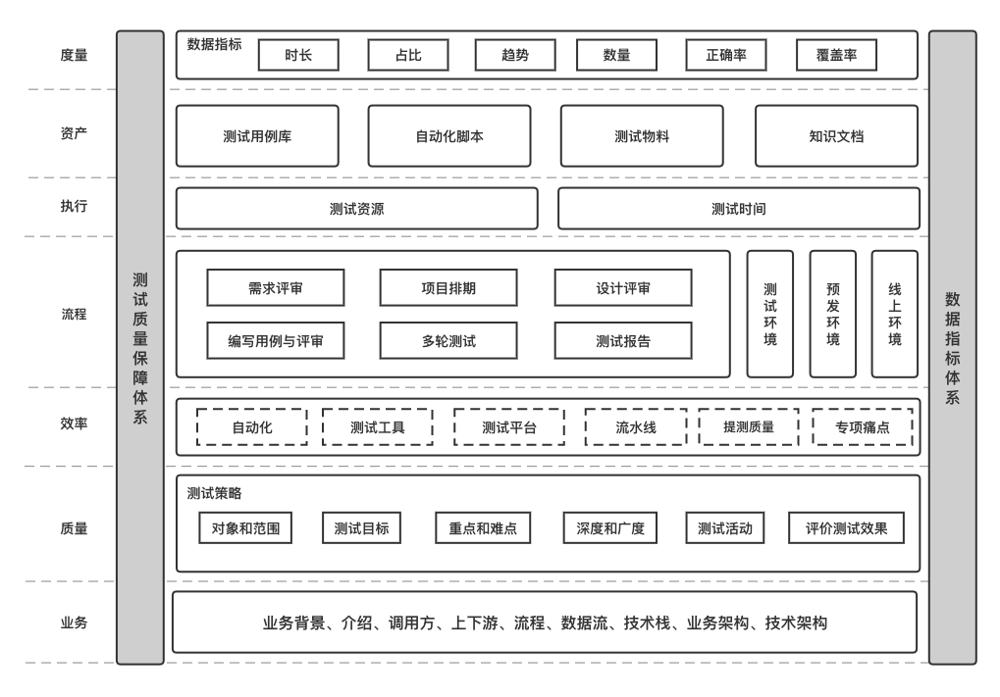
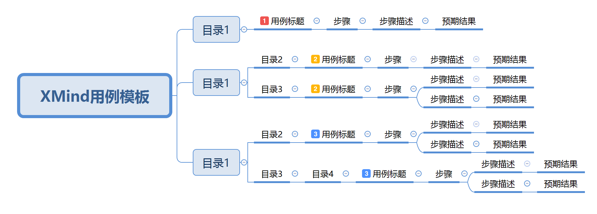
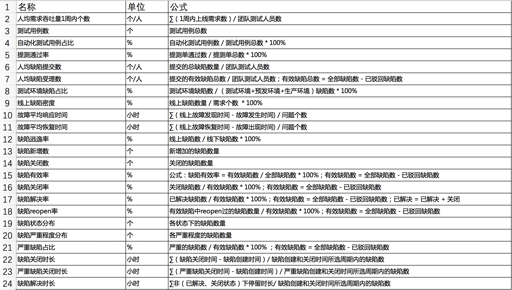

1 【持续更新】大厂是如何保障测试质量的¶

体系建设¶

保障测试质量的总体思路是建设一套测试质量保障体系和一套数据指标体系。测试质量保障体系是从业务、质量、效率、流程、执行、资产层面来建立一套适配于公司业务的体系，贯穿于测试工作的思想和行为的方方面面。数据指标体系是一种度量方式，通过数据来量化工作成果，制定KPI，也是驱动目标达成的一种有效手段。
需求阶段¶
产品：组织产、研、测进行需求评审（评审不通过要进行二次评审）。
研发：组织产、研、测进行设计评审；输出研发排期；组织研、测进行代码评审。
测试：根据研发排期和测试工作量，输出测试排期；组织产、研、测进行用例评审；输出测试阶段所需物料（项目找项目经理协调，需求找产品协调）；输出联调测试计划；输出研发自测用例。
交付物：prd、排期、设计文档、测试用例、自测用例、所需物料、联调测试计划。
注意，是否需要压测应由产、研、测来共同决策。
提测阶段¶
研发：说明提测内容及改动点；提测前需部署环境自测验证及上下游调通。
测试：完成用例设计，组织用例评审；收到提测后，部署环境进行冒烟测试，不通过驳回研发提测，通过进入测试阶段。
交付物：评审邮件；提测单。
提测若发生延期，非紧急需求进行测试相应延期，紧急需求或涉及到测试资源冲突等问题，测试重新评估排期。
测试阶段¶
研发：收到bug后72小时内解决，紧急需求24小时内日清；主动推动阻塞性问题解决，及时同步进度。
测试：提交bug（问题描述、复现步骤、实际结果、预期结果），可截图或录屏补充说明；及时同步测试过程中发现风险点；紧急需求日报反馈测试进度；已解决bug24小时内完成验证。
交付物：bug。
注意，上线后发生需求变更，重新评审，重新排期，重新提测。
用例规范¶
用例内容¶
用例集：按照系统模块或逻辑分组。
用例标题：对测试内容的精准简洁描述，尽可能用少的字符数描述清楚用例覆盖点及结果。
步骤描述：对测试内容的详细步骤描述，包括但不限于：1、数据初始化；2、功能步骤。
预期结果：执行步骤对应的无bug时的结果。
前置条件、用例类型、优先级按需添加。
XMind推荐用以下格式编写：

目录采用多层级目录，用例标题打上优先级的标记，步骤拆成多个，步骤描述和预期结果一一对应。
用例级别¶
关键用例：最核心的用例，线上自动化巡检用例，数量占20%及以下。
基本功能用例：常见的业务回归用例，需要自动化，数量占60%及以上。
一般功能用例：基线用例，非必须自动化。
一次性用例：非基线用例。
用例管理¶
一个产品/系统/项目只维护一份用例。迭代用例采用分支模型来管理，参照开发分支模型，在上线完成后，分支用例合入主干用例，合入时根据用例级别全部或部分合入。
缺陷规范¶
缺陷内容¶
缺陷描述：具体而详细的描述。
重现步骤：重现的操作步骤或者接口出入参等。
期望结果：无bug情况下的预期结果。
实际结果：实际的结果，接口出参或者报错信息等。
原因定位：非必填，定位到原因可以描述下。
修复建议：非必填，有建议可以描述下。
严重程度¶
致命 Blocker：系统无法执行、崩溃或严重资源不足、应用模块无法启动或异常退出、无法测试、造成系统不稳定。
严重 Critical：影响系统功能或操作，主要功能存在严重缺陷，但不会影响到系统稳定性。
一般 Major：界面、性能缺陷、兼容性。
轻微 Trivial：易用性及建议性问题。
状态流转¶
新建、待处理、已解决、驳回、已关闭、重新开启。
指标库¶

参考资料：
全面认识数据指标体系 https://www.cnblogs.com/yexiaochai/p/16041013.html
测试在项目流程中的那些事儿 https://testerhome.com/topics/32723
我在 Z 厂的半年工作总结 https://testerhome.com/topics/32883
《测试架构师修炼之道》